1. Contributors
Hayri Cicek |
|||
Phillip Krüger |
|||
Cesar Hernandez |
|||
Amelia Eiras |
|||
Peggy Blevins |
|||
Ondro Mihályi |
|||
Rudy De Busscher |
2. This book is for
This book is for Java developers that want to quickly learn how to create a REST API using MicroProfile.
3. What you need for this book
To try the code samples in this book you will need this.
-
JDK 8+
-
Maven
4. What Is MicroProfile?
MicroProfile is an Open Source project hosted by Eclipse Foundation and is dedicated to optimize the Enterprise Java for microservice based architectures. The first release was in 2016.
MicroProfile consist of following specifications:
Open Tracing |
Open API |
Rest Client |
Config |
Fault Tolerance |
Metrics |
JWT Propagation |
Health Check |
CDI |
JSON-P |
JAX-RS |
JSON-B |
5. MicroProfile Implementations
TomEE |
|
Payara |
|
Open Liberty |
|
Thorntail |
|
KumuluzEE |
|
Helidon |
|
SmallRye |
|
Hammock |
|
Launcher |
6. Getting Started
6.1. Preparation
Before you can start, you need to install JDK and Maven.
-
JDK: Download the JDK from https://openjdk.java.net/install/index.html
-
Follow the instructions at https://maven.apache.org/download.cgi to install Maven.
7. BookStore
7.1. Generating the project
We will use the Kodnito MicroProfile Archetype to generate our project. Open your terminal and type in the following command to generate our project.
mvn archetype:generate -DarchetypeGroupId=com.kodnito -DarchetypeArtifactId=kodnito-microprofile-archetype -DarchetypeVersion=1.0.1 -DgroupId=com.kodnito.bookstore.rest -DartifactId=book-store -Dversion=1.0-SNAPSHOTType Enter and you will have your new project generated. Now go to the project directory and type the following command for downloading the dependencies and when it’s done, open the project in your favourite IDE. Open the pom.xml and add the following:
<dependency>
<groupId>com.h2database</groupId>
<artifactId>h2</artifactId>
<version>1.4.196</version>
<scope>runtime</scope>
</dependency>
<dependency>
<groupId>org.eclipse.persistence</groupId>
<artifactId>eclipselink</artifactId>
<version>2.7.4</version>
</dependency>
<dependency>
<groupId>jakarta.platform</groupId>
<artifactId>jakarta.jakartaee-api</artifactId>
<version>${jakarta.version}</version>
<scope>provided</scope>
</dependency>
<plugins>
<plugin>
<groupId>fish.payara.maven.plugins</groupId>
<artifactId>payara-micro-maven-plugin</artifactId>
<version>1.0.1</version>
<configuration>
<payaraVersion>${version.payara.micro}</payaraVersion>
<deployWar>true</deployWar>
<commandLineOptions>
<option>
<key>--autoBindHttp</key>
</option>
</commandLineOptions>
</configuration>
</plugin>
</plugins>Your pom.xml should look like this:
<?xml version="1.0" encoding="UTF-8"?>
<project xmlns="http://maven.apache.org/POM/4.0.0" xmlns:xsi="http://www.w3.org/2001/XMLSchema-instance" xsi:schemaLocation="http://maven.apache.org/POM/4.0.0 http://maven.apache.org/xsd/maven-4.0.0.xsd">
<modelVersion>4.0.0</modelVersion>
<groupId>com.kodnito.bookstore.rest</groupId>
<artifactId>book-store</artifactId>
<version>1.0-SNAPSHOT</version>
<packaging>war</packaging>
<dependencies>
<dependency>
<groupId>jakarta.platform</groupId>
<artifactId>jakarta.jakartaee-api</artifactId>
<version>${jakarta.version}</version>
<scope>provided</scope>
</dependency>
<dependency>
<groupId>org.eclipse.microprofile</groupId>
<artifactId>microprofile</artifactId>
<version>${microprofile.version}</version>
<type>pom</type>
<scope>provided</scope>
</dependency>
<dependency>
<groupId>com.h2database</groupId>
<artifactId>h2</artifactId>
<version>1.4.196</version>
<scope>runtime</scope>
</dependency>
<dependency>
<groupId>org.eclipse.persistence</groupId>
<artifactId>eclipselink</artifactId>
<version>2.7.4</version>
</dependency>
</dependencies>
<build>
<finalName>restapi</finalName>
<plugins>
<plugin>
<groupId>fish.payara.maven.plugins</groupId>
<artifactId>payara-micro-maven-plugin</artifactId>
<version>1.0.1</version>
<configuration>
<payaraVersion>${version.payara.micro}</payaraVersion>
<deployWar>true</deployWar>
<commandLineOptions>
<option>
<key>--autoBindHttp</key>
</option>
</commandLineOptions>
</configuration>
</plugin>
</plugins>
</build>
<properties>
<maven.compiler.source>1.8</maven.compiler.source>
<maven.compiler.target>1.8</maven.compiler.target>
<failOnMissingWebXml>false</failOnMissingWebXml>
<version.payara.micro>5.193</version.payara.micro>
<jakarta.version>8.0.0</jakarta.version>
<microprofile.version>2.1</microprofile.version>
</properties>
</project>We added dependencies for H2 database, JPA , Payara Micro Maven runtime and javax transaction API. Now open the terminal and navigate to the project directory and type the following command to download the dependencies :
mvn clean install7.2. Payara Micro Config
Create a new directory called WEB-INF inside src/main/webapp and inside WEB-INF directory create the glassfish-resources.xml file and add the following to configure DataSource:
<?xml version="1.0" encoding="UTF-8"?>
<!DOCTYPE resources PUBLIC "-//GlassFish.org//DTD GlassFish Application Server 3.1 Resource Definitions//EN" "http://glassfish.org/dtds/glassfish-resources_1_5.dtd">
<resources>
<jdbc-resource
pool-name="H2Pool"
jndi-name="java:app/jdbc/restapi"/>
<jdbc-connection-pool
name="H2Pool"
res-type="javax.sql.DataSource"
datasource-classname="org.h2.jdbcx.JdbcDataSource">
<property name="user" value="sa"/>
<property name="password" value=""/>
<property name="url" value="jdbc:h2:mem:restapiDB"/>
</jdbc-connection-pool>
</resources>We use the open source H2 database, which can be embedded in Java applications or run in the client mode.
It’s really easy to get started with H2 database, but I don’t think it’s a good idea to use it in production.
This config will create an in memory based database called restapiDB.
Now that we have our PayaraMicro DataSource configured it’s time to create our persistence.xml file.
Inside src/main/resources create the persistence.xml file and add the following:
<?xml version="1.0" encoding="UTF-8"?>
<persistence version="1.0"
xmlns="http://java.sun.com/xml/ns/persistence"
xmlns:xsi="http://www.w3.org/2001/XMLSchema-instance"
xsi:schemaLocation="http://java.sun.com/xml/ns/persistence http://java.sun.com/xml/ns/persistence/persistence_1_0.xsd">
<persistence-unit name="restapi_PU" transaction-type="JTA">
<provider>org.eclipse.persistence.jpa.PersistenceProvider</provider>
<jta-data-source>java:app/jdbc/restapi</jta-data-source>
<properties>
<property name="eclipselink.ddl-generation" value="create-tables"/>
<property name="eclipselink.ddl-generation.output-mode" value="database"/>
</properties>
</persistence-unit>
</persistence>persistence.xml is the standard configuration file for JPA and it has to be included in the META-INF directory.
The persistence.xml file defines what provider to be used, the name of the persistence unit, how classes should be mapped to database tables.
eclipselink.ddl-generation will create the database and tables.
Now that we have everything configured, it’s time to start working on our API.
7.3. Entity
An Entity is a Java class that is marked with annotations that represent objects in a database. Create a new file called Book.java inside com.kodnito.bookstore.entity and make it look like this:
package com.kodnito.bookstore.entity;
import java.io.Serializable;
import javax.persistence.Entity;
import javax.persistence.GeneratedValue;
import javax.persistence.GenerationType;
import javax.persistence.Id;
import javax.persistence.NamedQueries;
import javax.persistence.NamedQuery;
import javax.persistence.Table;
@Entity
@Table(name = "books")
@NamedQueries({
@NamedQuery(name = "Book.findAll", query = "SELECT b FROM Book b")
})
public class Book implements Serializable {
private static final long serialVersionUID = 1L;
@Id
@GeneratedValue(strategy = GenerationType.AUTO)
private Long id;
private String title;
private String description;
private String isbn;
private String publisher;
private String language;
private String author;
private float price;
private int pages;
public Long getId() {
return id;
}
public void setId(Long id) {
this.id = id;
}
public String getTitle() {
return title;
}
public void setTitle(String title) {
this.title = title;
}
public String getDescription() {
return description;
}
public void setDescription(String description) {
this.description = description;
}
public String getIsbn() {
return isbn;
}
public void setIsbn(String isbn) {
this.isbn = isbn;
}
public String getPublisher() {
return publisher;
}
public void setPublisher(String publisher) {
this.publisher = publisher;
}
public String getLanguage() {
return language;
}
public void setLanguage(String language) {
this.language = language;
}
public static long getSerialVersionUID() {
return serialVersionUID;
}
public String getAuthor() {
return author;
}
public float getPrice() {
return price;
}
public void setPrice(float price) {
this.price = price;
}
public int getPages() {
return pages;
}
public void setPages(int pages) {
this.pages = pages;
}
}-
@Entityannotation indicates that it is a JPA entity -
@Tableannotation is used to name the table in the database -
@NamedQueriesannotation is used to add multiple queries -
@NamedQueryannotation defines query with a name -
@Idannotation is used to define the primary key and the Id property is also annotated with@GeneratedValueto indicate that the Id should be generated automatically.
7.4. Business Logic
It’s time to concentrate on the business logic code. It’s always best to separate the code that each class does its own job. We will now create the BookService.java file for interacting with the database. Now create the BookService.java file inside com.kodnito.bookstore.service package and make it look like:
package com.kodnito.bookstore.service;
import com.kodnito.bookstore.entity.Book;
import java.util.ArrayList;
import java.util.List;
import javax.enterprise.context.ApplicationScoped;
import javax.persistence.EntityManager;
import javax.persistence.PersistenceContext;
import javax.transaction.Transactional;
@ApplicationScoped
public class BookService {
@PersistenceContext(unitName = "restapi_PU")
EntityManager em;
public List getAll() {
List<Book> books = em.createNamedQuery("Book.findAll", Book.class).getResultList();
return books != null ? books : new ArrayList<>();
}
public Book findById(Long id) {
return em.find(Book.class, id);
}
@Transactional
public void update(Book book) {
em.merge(book);
}
@Transactional
public void create(Book book) {
em.persist(book);
}
@Transactional
public void delete(Book book) {
if (!em.contains(book)) {
book = em.merge(book);
}
em.remove(book);
}
}What does everything mean in this file, we start at the beginning of the file with the @ApplicationScoped annotation.
When an object is annotated with the @ApplicationScoped annotation, it is created once for the duration of the application.
@PersistenceContext annotation injects the EntityManager to be used at runtime. We have created five methods to interact with the database.
getAll method will get all the objects from the books table, when we want a single object we will use the findById method with an id.
Update method like it says will update an existing object, create method will create a new Book object and delete will delete an existing Book object from the database.
The @Transactional annotation provides the application the ability to control the transaction boundaries.
8. Building REST APIs Using MicroProfile
REST stands for representational state transfer and is a software architecture style for creating web services. The primary used HTTP verbs are GET, POST, PUT, PATCH and DELETE.
GET |
Get a list of resources or a single resources |
POST |
Create a new resource |
PUT |
Update/Replace an existing resource |
PATCH |
Update/Modify an existing resource |
DELETE |
Delete an existing resource |
Now how should we define URIs for our book store application:
GET |
Return a list of all Books |
|
GET |
Return the Book whose ID is 1 |
|
POST |
Create a new Book resource |
|
PUT |
Update the Book whose ID is 1 |
|
DELETE |
Delete the Book whose ID is 1 |
Now that we have defined the book store URIs, it’s time to start coding.
Create a new file called BookStoreEndpoint.java inside com.kodnito.bookstore.rest.
We start creating the GET methods, open the BookStoreEndpoint.java file and add the following:
package com.kodnito.bookstore.rest;
import com.kodnito.bookstore.entity.Book;
import com.kodnito.bookstore.service.BookService;
import javax.enterprise.context.RequestScoped;
import javax.inject.Inject;
import javax.ws.rs.Consumes;
import javax.ws.rs.GET;
import javax.ws.rs.POST;
import javax.ws.rs.Path;
import javax.ws.rs.Produces;
import javax.ws.rs.core.MediaType;
import javax.ws.rs.core.Response;
@RequestScoped
@Path("books")
@Produces(MediaType.APPLICATION_JSON)
@Consumes(MediaType.APPLICATION_JSON)
public class BookStoreEndpoint {
@Inject
BookService bookService;
@GET
public Response getAll() {
return Response.ok(bookService.getAll()).build();
}
@GET
@Path("{id}")
public Response getBook(@PathParam("id") Long id) {
Book book = bookService.findById(id);
return Response.ok(book).build();
}
}We start with the annotations we have added, the @RequestScoped annotation indicates that this class will be created once every request.
@Path annotation identifies the URI path to which the resource responds.
@Produces annotation will automatically convert the response to JSON format and @Consumes annotation will automatically convert the posted JSON string here to Book object.
We inject the BookService with the @Inject annotation. We annotated the getAll method with @GET annotation, which maps /books HTTP GET request to the method and will retrieve all the books from the database and return the entire list.
Parameters are accessed with the @PathParam annotation.
Next, we will create the POST method, add the following to the BookStoreEndpoint.java:
@POST
public Response create(Book book) {
bookService.create(book);
return Response.ok().build();
}The create method is annotated with the @POST annotation, which indicates that HTTP POST request are mapped to this method.
Now that we have GET and POST methods done we can test that our application works.
Open the terminal and navigate to the project directory and type the following command to start our application.
mvn clean package payara-micro:startWe start with the GET method.
curl -i -H "Accept: application/json" -H "Content-Type: application/json" -X GET http://localhost:8080/restapi/booksBecause we don’t have any objects in the database, we will only get an empty list.
Output
[]%Time to create Book objects in the database.
curl -i -X POST -H "Content-Type:application/json" \
--data '{"title":"This is my test book","description":"this is my book description",
"isbn": "12xxxxxxxx", "publisher": "None Yet", "language":"English","author":"Hayri Cicek",
"price": "0.00","pages":"0"}' http://localhost:8080/restapi/booksOutput
HTTP/1.1 200 OK
Server: Payara Micro #badassfish
Content-Length: 0
X-Frame-Options: SAMEORIGINNow that we have created one book object, we can go back and try the GET method again to see that we get the book object from the database.
curl -i -H "Accept: application/json" -H "Content-Type: application/json" -X GET http://localhost:8080/restapi/booksOutput
HTTP/1.1 200 OK
Server: Payara Micro #badassfish
Content-Type: application/json
Content-Length: 171
X-Frame-Options: SAMEORIGIN
[{"description":"this is my book description","id":1,"isbn":"12xxxxxxxx","language":"English","pages":0,"price":0.0,"publisher":"None Yet","title":"This is my test book"}]%Now, we have a list with one object returned to us from the database. Create another one and try to get a single object back.
curl -i -X POST -H "Content-Type:application/json" \
--data '{"title":"This is my second test book","description":"this is my second book description",
"isbn": "13xxxxxxxx", "publisher": "None Yet", "language":"English","author":"Hayri Cicek",
"price": "0.00","pages":"0"}' http://localhost:8080/restapi/bookscurl -i -H "Accept: application/json" -H "Content-Type: application/json" -X GET http://localhost:8080/restapi/books/2Output
HTTP/1.1 200 OK
Server: Payara Micro #badassfish
Content-Type: application/json
Content-Length: 183
X-Frame-Options: SAMEORIGIN
{"description":"this is my second book description","id":2,"isbn":"13xxxxxxxx","language":"English","pages":0,"price":0.0,"publisher":"None Yet","title":"This is my second test book"}%The GET and POST methods seems to work and it’s time to create the rest of the methods, PUT and DELETE. Open BookStoreEndpoint and add the following for updating an existing object.
@PUT
@Path("{id}")
public Response update(@PathParam("id") Long id, Book book) {
Book updateBook = bookService.findById(id);
updateBook.setIsbn(book.getIsbn());
updateBook.setDescription(book.getDescription());
updateBook.setLanguage(book.getLanguage());
updateBook.setPages(book.getPages());
updateBook.setPrice(book.getPrice());
updateBook.setPublisher(book.getPublisher());
updateBook.setTitle(book.getTitle());
bookService.update(updateBook);
return Response.ok().build();
}Here we annotate the update method with @PUT annotation, which maps HTTP PUT verb request to this method and the method takes two parameters, id and Book object.
Next is to add the Delete method to the API, open BookStoreEndpoint.java and add the following:
@DELETE
@Path("{id}")
public Response delete(@PathParam("id") Long id) {
Book getBook = bookService.findById(id);
bookService.delete(getBook);
return Response.ok().build();
}Here we annotate the delete method with @DELETE annotation, which maps HTTP DELETE verb request to this method.
We pass an id to this method, which finds and deletes the Book objects whose id match.
Now in the terminal, if you haven’t quit the Payara Micro server, then quit by Ctrl+c and start again using the same mvn clean package payara-micro:start command.
Open another terminal window and try both the Update and Delete functions.
curl -H 'Content-Type: application/json' -X PUT \
-d '{"title":"This is my second test book updated","description":"this is my second book description updated",
"isbn": "13xxxxxxxx", "publisher": "None Yet", "language":"English","author":"Hayri Cicek",
"price": "1.00","pages":"0"}' http://localhost:8080/restapi/books/2curl -i -H "Accept: application/json" -H "Content-Type: application/json" -X GET http://localhost:8080/restapi/books/2Output
HTTP/1.1 200 OK
Server: Payara Micro #badassfish
Content-Type: application/json
Content-Length: 199
X-Frame-Options: SAMEORIGIN
{"description":"this is my second book description updated","id":2,"isbn":"13xxxxxxxx","language":"English","pages":0,"price":1.0,"publisher":"None Yet","title":"This is my second test book updated"}%Here, I will update the Book with id 2 and if you don’t have Book object with id 2 then take one that you have in your database, now if you get all objects again you will see that the object is updated. Next is to try the DELETE method, open a new terminal tab and use the command below.
curl -X DELETE http://localhost:8080/restapi/books/2Now when you get the book list again, the book object is deleted.
curl -i -H "Accept: application/json" -H "Content-Type: application/json" -X GET http://localhost:8080/restapi/booksOutput
HTTP/1.1 200 OK
Server: Payara Micro #badassfish
Content-Type: application/json
Content-Length: 171
X-Frame-Options: SAMEORIGIN
[{"description":"this is my book description","id":1,"isbn":"12xxxxxxxx","language":"English","pages":0,"price":0.0,"publisher":"None Yet","title":"This is my test book"}]%9. MicroProfile Metrics
When we build micro services or web applications, we need to monitor our application that it’s running, have memory or disk space and for that we have MicroProfile Metrics which is very easy to get started with and use. Open the BookStoreEndpoint.java file and make the getAll method to look like this.
@Timed(name = "getAllBooks",
description = "Monitor the time getAll Method takes",
unit = MetricUnits.MILLISECONDS,
absolute = true)
@GET
public Response getAll() {
return Response.ok(bookService.getAll()).build();
}@Timed annotation will monitor how long the process takes.
The metadata fields on @Timed annotation are optional, but we have added a few, name field is the name of the metric, the description is used to describe the metric, unit sets the unit of the metric and absolute is used to determine if the name specified in the name field is the exact name.
Now Kill the Payara Micro server and start it again using the command mvn clean package payara-micro:start and first navigate to the http://localhost:8080/restapi/books, because we need to time it and see how long the process will take, now open another tab and go to http://localhost:8080/metrics/application and voila you have some metrics.
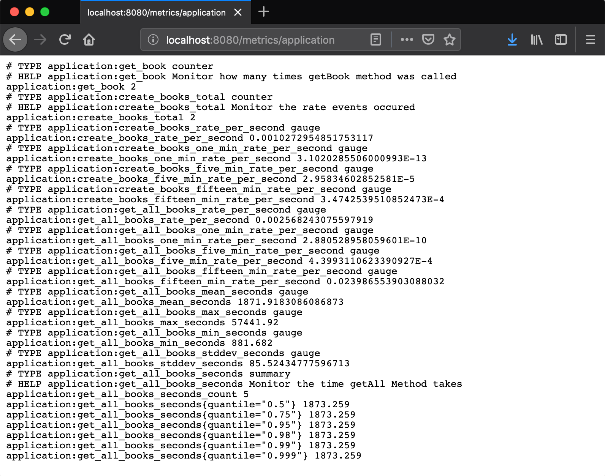
Here we have a list of metrics and if we want a single metric then we could use the name we specified in the name field and navigate to http://localhost:8080/metrics/application/get-all-books.
9.1. @Metered
@Metered annotation will monitor the rate events occurred. The meta fields are optional, but it makes life easy if we add some data to the meta fields. Change the create method to look like this.
@Metered(name = "create-books",
unit = MetricUnits.MILLISECONDS,
description = "Monitor the rate events occured",
absolute = true)
@POST
public Response create(Book book) {
bookService.create(book);
return Response.ok().build();
}Like the @Timed annotation, we have name, unit, description and absolute, which is almost identical.
9.2. @Counted
@Counted annotation will monitor how many times a method gets invoked, and the @Counted annotation have a few meta fields and are optional. Update the getBook method to look like this.
@Counted(unit = MetricUnits.NONE,
name = "getBook",
absolute = true,
monotonic = true,
displayName = "get single book",
description = "Monitor how many times getBook method was called")
@GET
@Path("{id}")
public Response getBook(@PathParam("id") Long id) {
Book book = bookService.findById(id);
return Response.ok(book).build();
}Here, like the other metrics, we have name, absolute, monotonic, displayName and description, the table below shows what everything is for:
unit |
sets the unit of the metric. |
absolute |
is used to determine if the name specified in the name field is the exact name. |
monotonic |
is set to true, which means the counter increases monotonically. |
displayName |
the display name of the counter |
description |
describe the metric |
9.3. @Gauge
@Gauge annotation is used to return just a value
The metadata fields on @Counted annotation are optional
Example:
@GET
@Path("/get-int-value")
@Gauge(unit = MetricUnits.NONE, name = "intValue", absolute = true)
public int getIntValue() {
return 3;
}unit |
sets the unit of the metric. |
name |
the name of the gauge. |
absolute |
is used to determine if the name specified in the name field is the exact name. |
Start the application server and go to http://localhost:8080/metrics/application, you should see all your metrics.
10. MicroProfile Rest Client
With MicroProfile Rest Client we can invoke RESTful services over HTTP, and in this tutorial we will create another service, which will call our Book Store application. Open a new terminal window and create a new MicroProfile Maven project using Kodnito MicroProfile Archetype, using the following command:
mvn archetype:generate -DarchetypeGroupId=com.kodnito
-DarchetypeArtifactId=kodnito-microprofile-archetype -DarchetypeVersion=1.0.1 -DgroupId=com.kodnito.bookstore.rest -DartifactId=book-store-client -Dversion=1.0-SNAPSHOTWe should have 2 projects now. Now cd into book-store-client application and type mvn clean install to download and install dependencies. Open book-store-client application in your IDE and add the following dependencies to the pom.xml: In the build section add the TomEE Maven runtime:
<plugins>
<plugin>
<groupId>org.apache.tomee.maven</groupId>
<artifactId>tomee-maven-plugin</artifactId>
<version>${tomee.version}</version>
<configuration>
<tomeeVersion>${tomee.version}</tomeeVersion>
<tomeeClassifier>microprofile</tomeeClassifier>
</configuration>
</plugin>
</plugins>And in the properties section add the version for the TomEE:
<tomee.version>8.0.0</tomee.version>Your pom.xml should look like this:
<?xml version="1.0" encoding="UTF-8"?>
<project xmlns="http://maven.apache.org/POM/4.0.0" xmlns:xsi="http://www.w3.org/2001/XMLSchema-instance" xsi:schemaLocation="http://maven.apache.org/POM/4.0.0 http://maven.apache.org/xsd/maven-4.0.0.xsd">
<modelVersion>4.0.0</modelVersion>
<groupId>com.kodnito.bookstore.rest</groupId>
<artifactId>book-store-client</artifactId>
<version>1.0-SNAPSHOT</version>
<packaging>war</packaging>
<dependencies>
<dependency>
<groupId>org.eclipse.microprofile</groupId>
<artifactId>microprofile</artifactId>
<version>2.0.1</version>
<type>pom</type>
<scope>provided</scope>
</dependency>
</dependencies>
<build>
<finalName>restapi</finalName>
<plugins>
<plugin>
<groupId>org.apache.tomee.maven</groupId>
<artifactId>tomee-maven-plugin</artifactId>
<version>${tomee.version}</version>
<configuration>
<tomeeVersion>${tomee.version}</tomeeVersion>
<tomeeClassifier>microprofile</tomeeClassifier>
</configuration>
</plugin>
</plugins>
</build>
<properties>
<tomee.version>8.0.0</tomee.version>
<maven.compiler.source>1.8</maven.compiler.source>
<maven.compiler.target>1.8</maven.compiler.target>
<failOnMissingWebXml>false</failOnMissingWebXml>
</properties>
</project>Now in the terminal type mvn clean install to download dependencies. It’s time to code our book-store-client service which we’ll call our book-store.
Inside com.kodnito.bookstore.response package create a new file called BookResponse.java and add the following.
package com.kodnito.bookstore.response;
public class BookResponse {
private Long id;
private String title;
private String description;
private String isbn;
private String publisher;
private String language;
private String author;
private float price;
private int pages;
public Long getId() {
return id;
}
public void setId(Long id) {
this.id = id;
}
public String getTitle() {
return title;
}
public void setTitle(String title) {
this.title = title;
}
public String getDescription() {
return description;
}
public void setDescription(String description) {
this.description = description;
}
public String getIsbn() {
return isbn;
}
public void setIsbn(String isbn) {
this.isbn = isbn;
}
public String getPublisher() {
return publisher;
}
public void setPublisher(String publisher) {
this.publisher = publisher;
}
public String getLanguage() {
return language;
}
public void setLanguage(String language) {
this.language = language;
}
public String getAuthor() {
return author;
}
public void setAuthor(String author) {
this.author = author;
}
public float getPrice() {
return price;
}
public void setPrice(float price) {
this.price = price;
}
public int getPages() {
return pages;
}
public void setPages(int pages) {
this.pages = pages;
}
}The response from BookStore service will be mapped using this class.
We will create two more files, create a new interface called BookStoreService.java inside com.kodnito.bookstore.service and add the following:
package com.kodnito.bookstore.service;
import com.kodnito.bookstore.response.BookResponse;
import java.util.List;
import javax.enterprise.context.Dependent;
import javax.ws.rs.GET;
import javax.ws.rs.Path;
import javax.ws.rs.Produces;
import javax.ws.rs.core.MediaType;
import org.eclipse.microprofile.rest.client.inject.RegisterRestClient;
@Dependent
@RegisterRestClient
@Path("books")
@Produces(MediaType.APPLICATION_JSON)
public interface BookStoreService {
@GET
public List<BookResponse> getAll();
}Here we create an interface with method(s) that represent RESTful APIs endpoint, and we can use this interface to invoke, the remote service.
Using @Dependent and @RegisterRestClient on the interface, will make that this interface will be mapped by the CDI.
Next thing to do is to create a new resource that will use this interface and invoke our book-store service.
Inside com.kodnito.bookstore.rest package create BookStoreEndpoint.java file and add the following:
package com.kodnito.bookstore.rest;
import java.net.MalformedURLException;
import java.net.URL;
import javax.enterprise.context.ApplicationScoped;
import javax.ws.rs.GET;
import javax.ws.rs.Path;
import javax.ws.rs.Produces;
import javax.ws.rs.core.MediaType;
import org.eclipse.microprofile.rest.client.RestClientBuilder;
import com.kodnito.bookstore.service.BookStoreService;
import javax.ws.rs.core.Response;
@ApplicationScoped
@Path("/books")
public class BookStoreEndpoint {
@Inject
@RestClient
private BookStoreService bookStoreService;
@GET
@Produces(MediaType.APPLICATION_JSON)
public Response books() throws MalformedURLException {
return Response.ok(bookStoreService.getAll()).build();
}
}This is almost identical to the one we have in our book-store application, when we invoke this endpoint on the book-store-client service, it will call the book-store service and retrieve all the books.
Before we start the service, we need to add URL to the service we call to the microprofile-config.properties file.
com.kodnito.bookstore.service.BookStoreService/mp-rest/url=http://localhost:8080/restapiNow open a new terminal tab and start the book-store service first and when the service is up, navigate to the directory where you have the book-store-client application and start the application using mvn clean package tomee:run -Dtomee-plugin.http=8081 and now open your browser and go to
http://localhost:8081/restapi/books, and we can see that our services talks to each other.
11. MicroProfile Config
MicroProfile Config API can be used to retrieve configuration information from different sources.
When we generated our Maven project we got an empty microprofile-config.properties file created in the src/main/resources package.
MicroProfile Config files are created in this package as default.
We will now add new properties and make our application read the properties from our config file.
Open microprofile-config.properties file and add the following.
username=root
password=secret
microprofile.apis={"config", "cdi", "jax-rs", "json-p", "fault tolerance", "healt check", "jwt auth", "metrics", "openapi", "opentracing","rest client"}Now open the BookStoreEndpoint.java and make it look like this:
@ApplicationScoped
@Path("/books")
public class BookStoreEndpoint {
@Inject
@ConfigProperty(name="username", defaultValue="admin")
private String username;
@GET
@Path("mp-config")
@Produces(MediaType.APPLICATION_JSON)
public Response mpConfig() {
Map<String, Object> configProperties = new HashMap<>();
configProperties.put("username", username);
return Response.ok(configProperties).build();
}
}@Inject @ConfigProperty is used for injecting a single configuration property.
We could also use @Inject Config and use getValue to retrieve configuration properties like this:
@ApplicationScoped
@Path("/books")
public class BookStoreEndpoint {
@Inject
@ConfigProperty(name="username", defaultValue="admin")
private String username;
@Inject
Config config;
@GET
@Path("mp-config")
@Produces(MediaType.APPLICATION_JSON)
public Response mpConfig() {
Map<String, Object> configProperties = new HashMap<>();
configProperties.put("username", username);
configProperties.put("password", config.getValue("password", String.class));
configProperties.put("microprofile-apis", config.getValue("microprofile.apis", String[].class));
return Response.ok(configProperties).build();
}
}Start the BookStoreClient service if not already started and type the following in a new terminal window:
curl -i -H "Accept: application/json" -H "Content-Type: application/json" -X GET http://localhost:8081/restapi/books/mp-configOutput
{"password":"secret","microprofile-apis":["{\"config\"","\"cdi\"","\"jax-rs\"","\"json-p\"","\"fault tolerance\"","\"healt check\"","\"jwt auth\"","\"metrics\"","\"openapi\"","\"opentracing\"","\"rest client\"}"],"username":"root"}%12. MicroProfile Open API
In this chapter, we will learn how to document our RESTful APIs.
MicroProfile OpenAPI defines interfaces to produce OpenAPI documentation from JAX-RS applications.
We will add documentation to our book-store service application.
Inside src/main/resources/META-INF create the openapi.yaml file and add the following :
openapi: 3.0.0
info:
title: This is my Book Store application API Title
description: This is my Book Store application description
license:
name: Eclipse Public License - v 1.0
url: https://www.eclipse.org/legal/epl-v10.html
version: 1.0.0
servers:
- url: http://localhost:8080This is our configuration for our API documentation, here we add title, description and license if we want.
Restart the book-store application and go to http://localhost:8080/openapi, and you will see your RESTful API documentation generated, it doesn’t say much about the endpoint and we can add more to the generated documentation.
Open BookStoreEndpoint.java and make the getAll() method to look like this:
@APIResponses(
value = {
@APIResponse(
responseCode = "404",
description = "We could not find anything",
content = @Content(mediaType = "text/plain"))
,
@APIResponse(
responseCode = "200",
description = "We have a list of books",
content = @Content(mediaType = "application/json",
schema = @Schema(implementation = Properties.class)))})
@Operation(summary = "Outputs a list of books",
description = "This method outputs a list of books")
@Timed(name = "get-all-books",
description = "Monitor the time getAll Method takes",
unit = MetricUnits.MILLISECONDS,
absolute = true)
@GET
public Response getAll() {
return Response.ok(bookService.getAll()).build();
}Restart the book-store service and refresh the http://localhost:8080/openapi endpoint and see the new generated OpenAPI documentation.
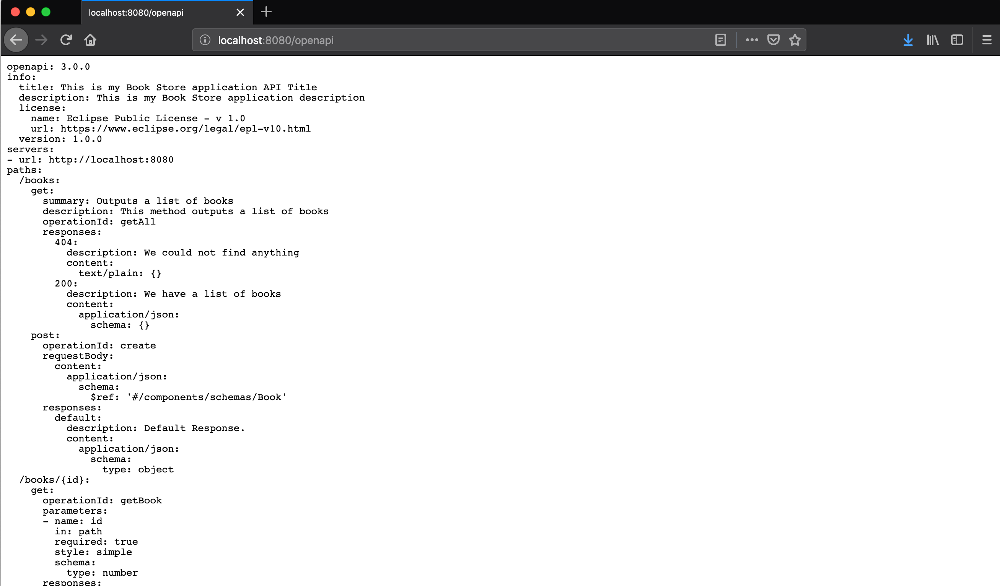
@APIResponses annotation describes multiple responses
@APIResponse annotation describes a single response
@Operation annotation describes a single operation on a path
@Parameter annotation describes a single operation parameter
Phillip Krüger have an excellent blog post on how to add Swagger UI to your OpenAPI documentation. https://www.phillip-kruger.com/post/microprofile_openapi_swaggerui/
13. MicroProfile Fault Tolerance
With MicroProfile Fault Tolerance, we can build services which will work even when something failed.
@Timeout annotation is used to avoid waiting forever for the response.
@Timeout(0)
@GET
public Response getAll() {
return Response.ok(bookService.getAll()).build();
}@Fallback annotation is used when something went wrong with the call then it will still operate without throwing an exception.
@Timeout(0)
@Fallback(fallbackMethod = "getAllFallbackMethod")
@GET
public Response getAll() {
return Response.ok(bookService.getAll()).build();
}
public Response getAllFallbackMethod() {
return Response.ok(Stream.of("Book One", "Book Two").collect(toList())).build();
}@Retry annotation is used to repeat the call when something failed.
@Retry(maxRetries = 3, delay = 300)
@GET
public Response getAll() {
return Response.ok(bookService.getAll()).build();
}With @Bulkhead annotation you can limit the number of concurrent requests that are made to the method
@GET
@Bulkhead(10)
public Response getAll() {
return Response.ok(bookService.getAll()).build();
}@CircuitBreaker annotation is used to immediately interrupt the call if the called services previously failed.
@GET
@CircuitBreaker(delay = 2000, requestVolumeThreshold = 2, failureRatio=0.65, successThreshold = 3)
public Response getAll() {
return Response.ok(bookService.getAll()).build();
}14. MicroProfile Health
Health checks are used to determine if service is running, shutdown, lack of disk space or maybe issues with the database connection.
Because we added all the MicroProfile dependencies in our services, we have an endpoint called /health by default and if we visit that
endpoint it will show us UP indicating that the service is up and running.
We can add custom health checks if we want. In your terminal windows, start the BookStoreClient service if not already running and
type the following to invoke the /health endpoint:
curl -i -H "Accept: application/json" -H "Content-Type: application/json" -X GET http://localhost:8081/restapi/healthOutput
{"checks":[],"outcome":"UP","status":"UP"}Create a new file called BookStoreClientHealthCheck.java inside com.kodnito.bookstore.rest package and make it look like the following
package com.kodnito.bookstore.rest;
import javax.enterprise.context.ApplicationScoped;
import org.eclipse.microprofile.health.Health;
import org.eclipse.microprofile.health.HealthCheck;
import org.eclipse.microprofile.health.HealthCheckResponse;
@Health
@ApplicationScoped
public class BookStoreClientHealthCheck implements HealthCheck {
@Override
public HealthCheckResponse call() {
return HealthCheckResponse.
named("diskspace").
up().
withData("free", "900MB").
build();
}
}Beans annotated with @Health and paired with @ApplicationScoped are discovered automatically.
We implement the HealthCheck interface, and we override the call() method.
Restart the BookStoreClient service and invoke the /health endpoint.
curl -i -H "Accept: application/json" -H "Content-Type: application/json" -X GET http://localhost:8081/restapi/healthOutput
{"checks":[{"data":{"free":"900MB"},"name":"diskspace","state":"UP"}],"outcome":"UP","status":"UP"}Now we have our data in the checks list. We are not limited with hardcoded data, this is for test purpose only.
We could add a check for database connection, disk space, or we could invoke BookStore service and check if the service is
in maintenance or the service is down.
Add the following property to the microprofile-config.properties file.
bookservice.url=http://localhost:8080/restapiAnd now update the BookStoreClientHealthCheck.java to look like the following
@Health
@ApplicationScoped
public class BookStoreClientHealthCheck implements HealthCheck {
@Inject
@ConfigProperty(name = "bookservice.url")
private String bookServiceUrl;
@Override
public HealthCheckResponse call() {
boolean isHealthy = false;
try {
Client client = ClientBuilder.newClient();
Response response = client.target(bookServiceUrl).request(MediaType.APPLICATION_JSON)
.get();
if (response.getStatus() != 200) {
isHealthy = false;
}
isHealthy = true;
} catch (Exception e) {
isHealthy = false;
}
if (!isHealthy) {
return HealthCheckResponse.named("bookservice")
.withData("service", "not available")
.down().build();
}
return HealthCheckResponse.named("bookservice")
.withData("service", "available")
.up().build();
}
}Here we inject the bookservice.url property, and then we invoke the BookStore service.
We check the response code we get back and if it’s not 200 (OK) then we return service not available.
Kill the BookService and start the BookServiceClient, if it’s not already started.
In your terminal window type the following to invoke the /health endpoint.
curl -i -H "Accept: application/json" -H "Content-Type: application/json" -X GET http://localhost:8081/restapi/healthOutput
{"checks":[{"data":{"service":"not available"},"name":"bookservice","state":"DOWN"}],"outcome":"DOWN","status":"DOWN"}%Now, because we stopped the BookService, we see that service is not available and the status is DOWN, if we start the
BookService and invoke the /health again then we see that the output shows that the service is available and status is UP.
curl -i -H "Accept: application/json" -H "Content-Type: application/json" -X GET http://localhost:8081/restapi/healthOutput
{"checks":[{"data":{"service":"available"},"name":"bookservice","state":"UP"}],"outcome":"UP","status":"UP"}Here is an example of how to check database connection health:
@Log
@Health
@ApplicationScoped
public class MembershipHealthCheck implements HealthCheck {
@Inject
private DataSource datasource;
@Override
public HealthCheckResponse call() {
HealthCheckResponseBuilder responseBuilder = HealthCheckResponse.named("membership");
try {
Connection connection = datasource.getConnection();
boolean isValid = connection.isValid(timeout);
DatabaseMetaData metaData = connection.getMetaData();
responseBuilder = responseBuilder
.withData("databaseProductName", metaData.getDatabaseProductName())
.withData("databaseProductVersion", metaData.getDatabaseProductVersion())
.withData("driverName", metaData.getDriverName())
.withData("driverVersion", metaData.getDriverVersion())
.withData("isValid", isValid);
return responseBuilder.state(isValid).build();
} catch(SQLException e) {
log.log(Level.SEVERE, null, e);
responseBuilder = responseBuilder
.withData("exceptionMessage", e.getMessage());
return responseBuilder.down().build();
}
}
@Inject @ConfigProperty(name = "health.membership.dbtimeout", defaultValue = "5")
private int timeout;
}Example
Phillip Krüger, GitHub
Example
Example to check free memory
@Override
public HealthCheckResponse call() {
return HealthCheckResponse
.named("book-store-client")
.state(true)
.withData("memory", Runtime.getRuntime().freeMemory())
.build();
}curl -i -H "Accept: application/json" -H "Content-Type: application/json" -X GET http://localhost:8081/restapi/healthOutput
{"checks":[{"data":{"memory":129470808},"name":"book-store-client","state":"UP"}],"outcome":"UP","status":"UP"}15. MicroProfile JWT
In this chapter, we will learn how to secure our services using MicroProfile JWT and Keycloak. Go to https://www.keycloak.org/downloads.html and download latest Standalone server distribution. Unzip the zip file and open a new terminal window and navigate to the keycloak folder. Now type the following command to start the Keycloak server:
./bin/standalone.sh -Djboss.http.port=8084First thing we will do is to create a new user, open your browser and navigate to http://localhost:8084/auth/ and create a new user with admin access.
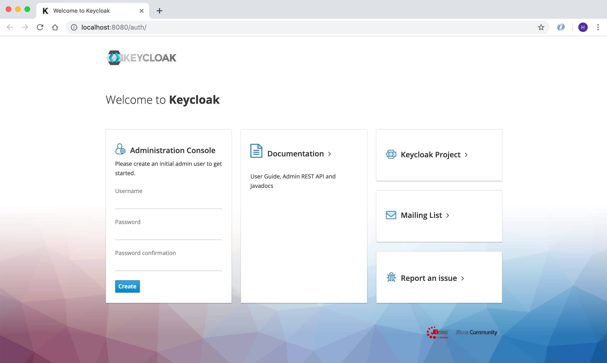
Now go to http://localhost:8084/auth/admin/ and login with the newly created user.
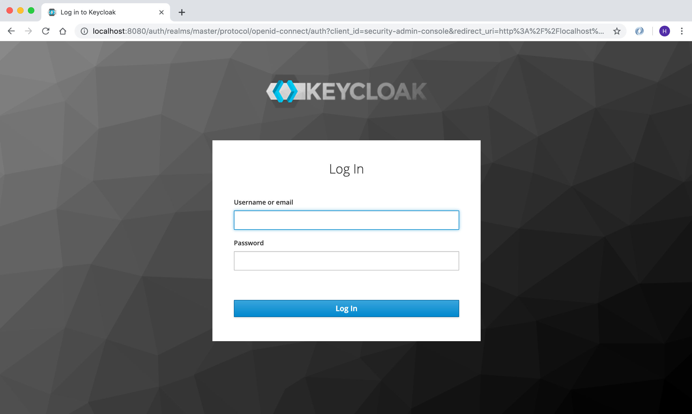
Click on Select Realm and click on Add Realm and create a new realm called public.
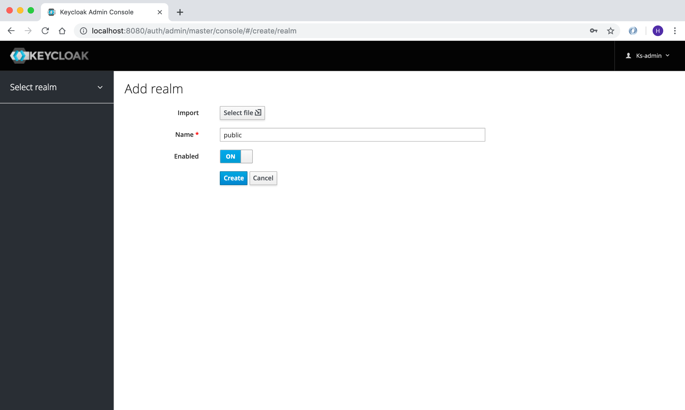
Now click on Client and create a new client called book-store-client, which we will use in our services.
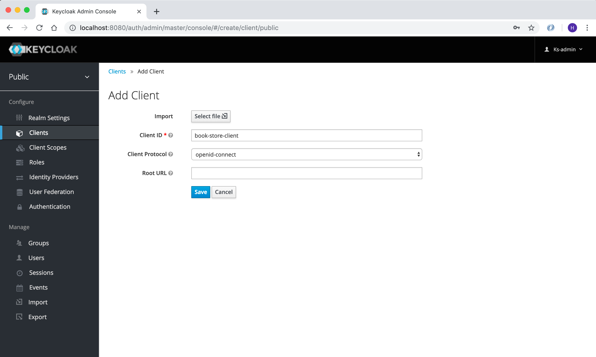
Now, we need to create another user which will be used by our services.
Click on Users and create a new user called book-store-client-user.
Update the Email, First Name and Last Name fields and click Save.
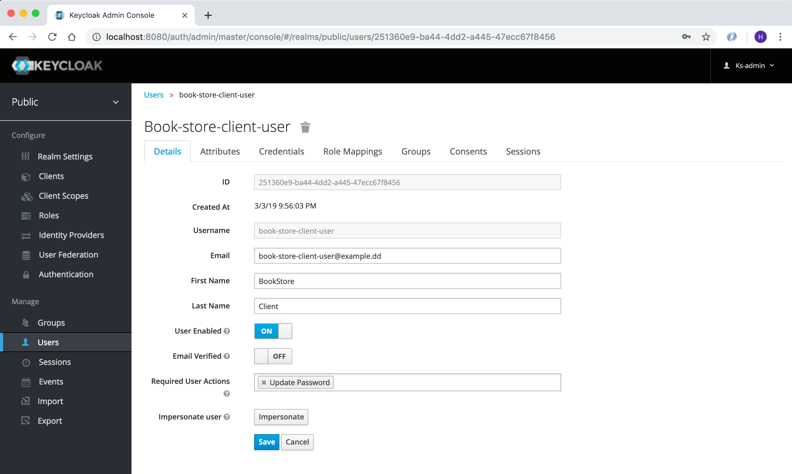
Now click on Credentials and create a new password and click on Reset password, now we are done with the Keycloak setup for
the user we will use.
Before we implement security in our services, we need to configure Keycloak.
-
Click on
Groupsand create a new group calledmysimpleservice
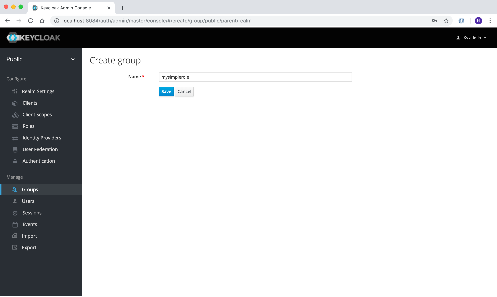
-
Click on
Usersand find thebook-store-client-userand click onGroupand click on themysimpleserviceand clickjoin.
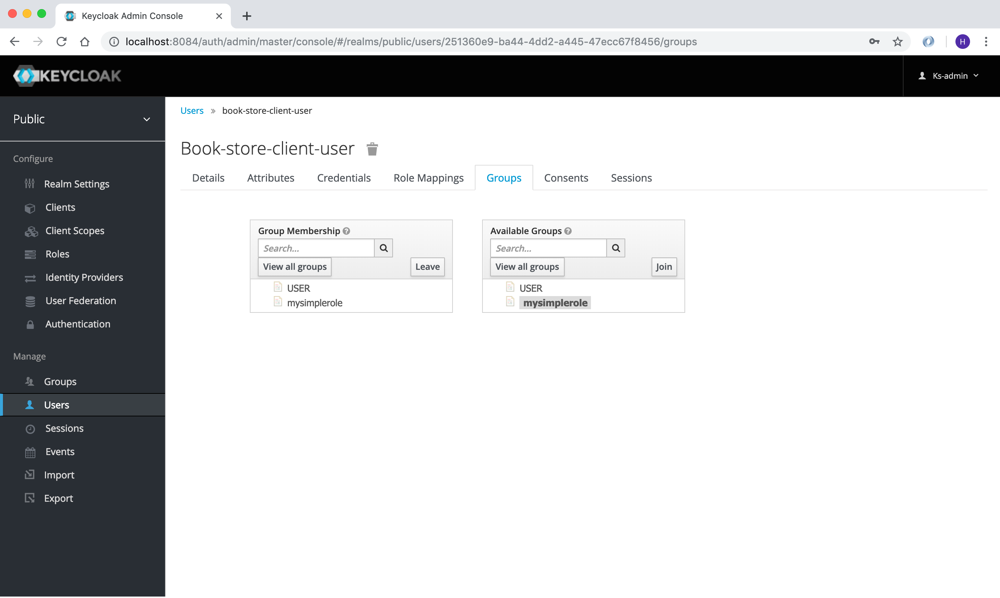
It’s time to implement Keycloak authentication in our services.
Open microprofile-config.properties in book-store-client and add the following:
mp.jwt.verify.publickey.location=/META-INF/keycloak-public-key.pem
mp.jwt.verify.issuer=http://localhost:8084/auth/realms/publicAnd create a new file called keycloak-public-key.pem inside src/main/resources/META-INF and store the public key.
-----BEGIN PUBLIC KEY-----
MIIBIjANBgkqhkiG9w0BAQEFAAOCAQ8AMIIBCgKCAQEAmDmSR9FxmQdjy7lLColVAILD3Gxj8uV5O9PS32CbVNKC1pTh/LvUUigCq5SVVyLb8Ctw4wcC+Ax/AK0GgN76P6bEy9C3k22AqV8TZ7P41oPUSf7OhKBDHpPT2KBz/7tcNTaWHaJQu29ZnlIzqds+0EotjMAQCBU/wz/DwWesM0L/6nN99/mTtYm2ODoFBAyJkLH0x0wyaHPiFTWz+jxUsHYEEPaSFncsWrOY3M+x8AmeI63Wo8D6qTkgvDhjVq/zFTg2E0vb3d86X8sb1nYqLR4aInzQq+qzMFhUZQT9j/rgeLKdmneL8gYSiF4Yt0nPWBTygmwizYOU/86Db6cGawIDAQAB
-----END PUBLIC KEY-----You find the public key here http://localhost:8084/auth/realms/public/
Now open the ApplicationConfig.java in book-store-client application and make it look like this:
@LoginConfig(authMethod = "MP-JWT")
@ApplicationPath("/")
@DeclareRoles({"mysimplerole", "ADMIN"})
public class ApplicationConfig extends Application {
}@LoginConfig annotation describe what associated realm name will be used in the application.
@DeclareRoles annotation is used to declare security roles.
Now open the BookStoreEndpoint.java file and add @RolesAllowed("mysimplerole") to the mpConfig() method.
@GET
@Path("mp-config")
@Produces(MediaType.APPLICATION_JSON)
@RolesAllowed("mysimplerole")
public Response mpConfig() {
Map<String, Object> configProperties = new HashMap<>();
configProperties.put("username", username);
configProperties.put("password", config.getValue("password", String.class));
configProperties.put("microprofile-apis", config.getValue("microprofile.apis", String[].class));
return Response.ok(configProperties).build();
}@RolesAllowed annotation is used to declare security roles and specifies a list of roles to access methods in the application.
Download Postman, if you don’t already have it installed. We will now invoke the Keycloak auth token endpoint to retrieve the access token to use in our service. Open Postman and add the following to retrieve access token.
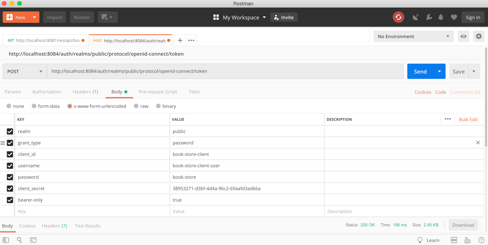
POST: http://localhost:8084/auth/realms/public/protocol/openid-connect/token
realm: public
grant_type: password
client_id: book-store-client
username: the_username_of_the_user
password: the_password_of_the_user
client_secret: the book store client secret
You find this in the Credentials menu.
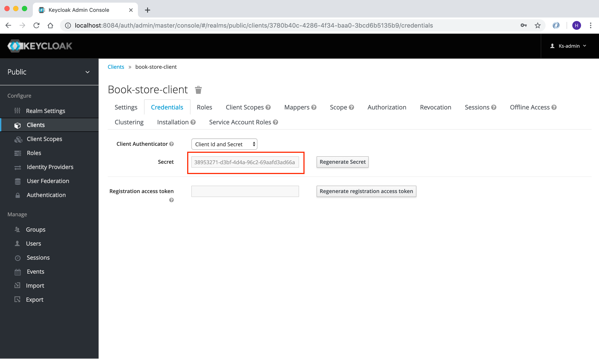
Now click on Send and you will retrieve access token. Copy the access token and open a new Postman tab.
Now, make a GET request to http://localhost:8081/restapi/books/mp-config, if you don’t send the request with access token,
you will get 401 Unauthorized.
In Type dropdown menu, choose Bearer Token and paste the token in Token field.
Now click on Send again and you will now get 200 OK.
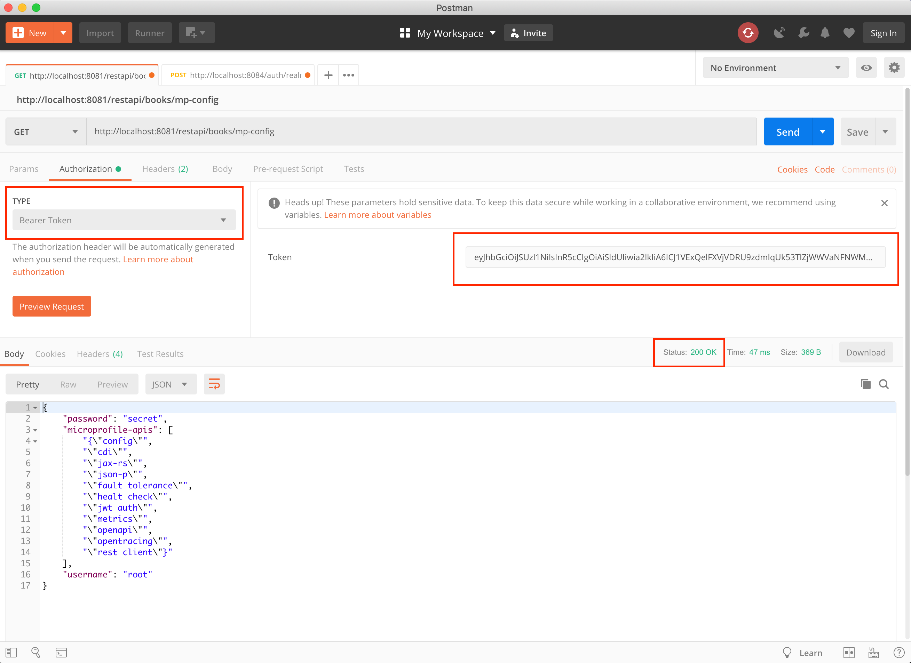
And that’s it, we have secured our /mp-config endpoint.
16. MicroProfile OpenTracing
OpenTracing is a standardized API that allows developers to instrument their own services for distributed tracing. With distributed tracing, you can troubleshoot your services by logging the requests.
@Traced annotation specify a class or method to be traced and has two arguments, which are optional.
value |
Defaults to true |
operationName |
Name of the span, default is "" |
@GET
@Produces(MediaType.APPLICATION_JSON)
@Traced(operationName = "booksOperation")
public Response books() throws MalformedURLException {
return Response.ok(bookStoreService.getAll()).build();
}We can use tracing tools like Zipkin or Jaeger to monitor and troubleshoot latency problems in distributed systems.
Zipkin |
|
Jaeger |
17. Eclipse MicroProfile Starter
We used the Kodnito MicroProfile Archetype to generate our projects, but there is a new way and it’s to use the new Eclipse MicroProfile Starter. Go to https://start.microprofile.io and follow the steps below to generate your new application.
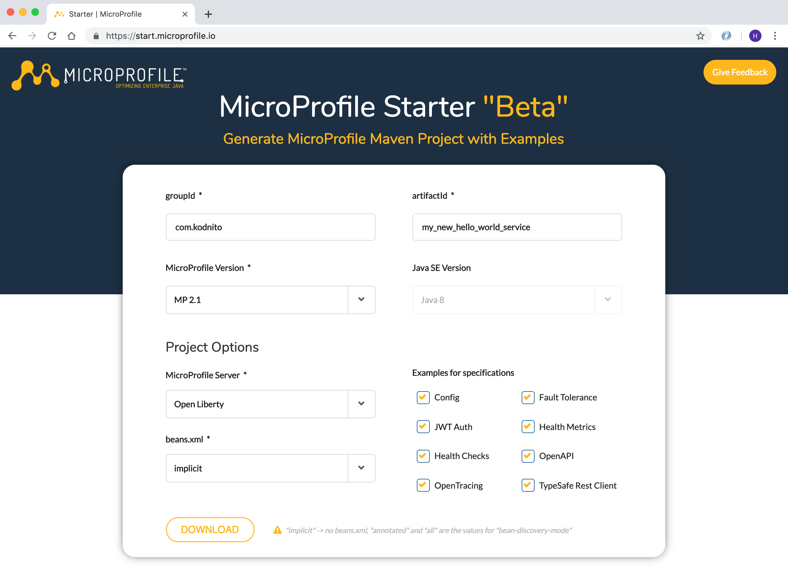
groupId: com.kodnito
artifactId: my_new_hello_world_service
MicroProfile Version: MP 2.1
MicroProfile Server: Choose server
Choose Beans Discovery Mode
In Examples for specifications section, choose what examples you want to be generated.
That’s it, now click Download button and your new project will be downloaded.
Unzip the zip file and open your terminal and go to the directory where the project is.
Depends on which server you choose, use one of the following commands to start the application.
Open Liberty
mvn clean package && java -jar target/hello_microprofile_world.jarThorntail
mvn clean package && java -jar target/hello_microprofile_world-thorntail.jarPayara
mvn clean package && java -jar target/hello_microprofile_world-microbundle.jarApache TomEE
mvn clean package && java -jar target/hello_microprofile_world-exec.jarKumuluzEE
mvn clean package && java -jar target/hello_microprofile_world.jarYou will find the test page at http://localhost:8080/index.html